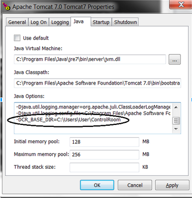
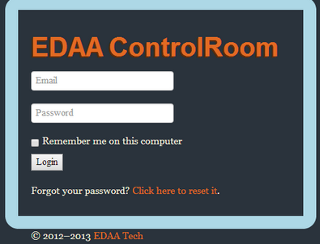

הוראות התקנה:¶
- ביכולתך להריץ את EDAA Server בכל מכשיר מבוסס Windows או Unix. ההנחיות הבאות רלוונטיות ל-Windows.
- EDAA Server רץ כשירות NT באמצעות שירות Tomcat7.
צעדים ראשונים
- התקן את Java 7
- הרץ את הקובץ apache-tomcat-7.0.55.exe
- חלץ (בעזרת WinRar ודומותיה) את הקובץ EDAA-server.zip אל התיקייה C:\Program Files\Apache Software Foundation\Tomcat 7.0\webapps
וודא שכל התיקיות הבאות נמצאות תחת webapps:
- ControlRoom
- app
- bower_components
- META-INF
- WEB-INF
- ControlRoom
- חלץ את EDAA-conf.7z לתוך C:\Users\User\ControlRoom
-
- בשורת הפקודה הרץ את הפקודה: cd C:\Program Files\Apache Software Foundation\Tomcat 7.0\bin
- כעת הרץ את הפקודה Tomcat7w.exe

- הוסף את הביטוי הבא: -DCR_BASE_DIR=c:\Users\User\ControlRoom ל- Java Options
 תרשים א' - הוספת הנתיב ל Tomcat7 שים לב:חשוב מאוד שהנתיב ימצא במחשבך, תוכל לשנות את הנתיב לכל נתיב שנמצא במחשבך. (דבר זה יכלול גם את קבצי הקונפיגורציה) - פתח את הקובץ C:\Program Files\Apache Software Foundation\Tomcat 7.0\conf\server.xml .
ערוך את התגית Connector והוסף URIEncoding="UTF-8":
<Connector port="8080" protocol="HTTP/1.1" connectionTimeout="20000" redirectPort="8443" URIEncoding="UTF-8" / >
השירות Tomcat7 ב- Windows Services - כעת tomcat7 מותקן בשירותי Windows ו-EDAA-server מותקן במחשבך.
- קבצי הקונפיגורציה(תצורה) ממוקמים בתיקייה c:\Users\User\ControlRoom
-
וודא שברשותך הקובץ
controlroom.properties
תצורת ברירת המחדל של קובץ התצורה controlroom.properties
username edaatech@gmail.com password 123456789! mail.smtp.host smtp.gmail.com mail.smtp.port 587 mail.debug false mail.subject restore password mail.admin edaatech@gmail.com statusScanPeriod 10 -
ישנם שני משתמשי ברירת מחדל מובנים במערכת:
שם שם משתמש סיסמה admin admin@edaatech.com 12345 control control@edaatech.com 12345 -
השתמש בחשבון admin כדי להתחיל בעבודתך וליצור משתמשים.
דף ההתחברות הוא http://<your-server-dns>/ControlRoom/app דף ההתחברות דף ההתחברות